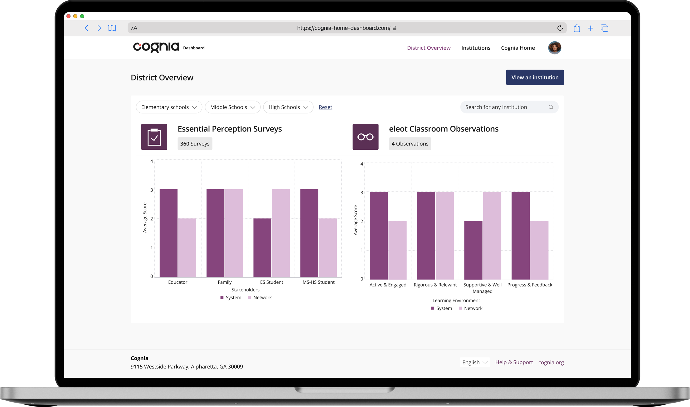
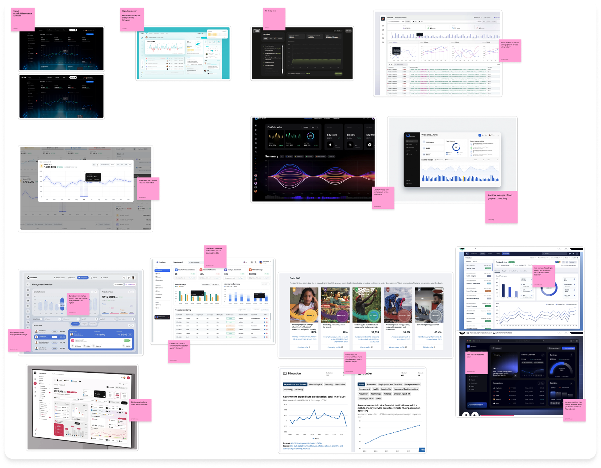
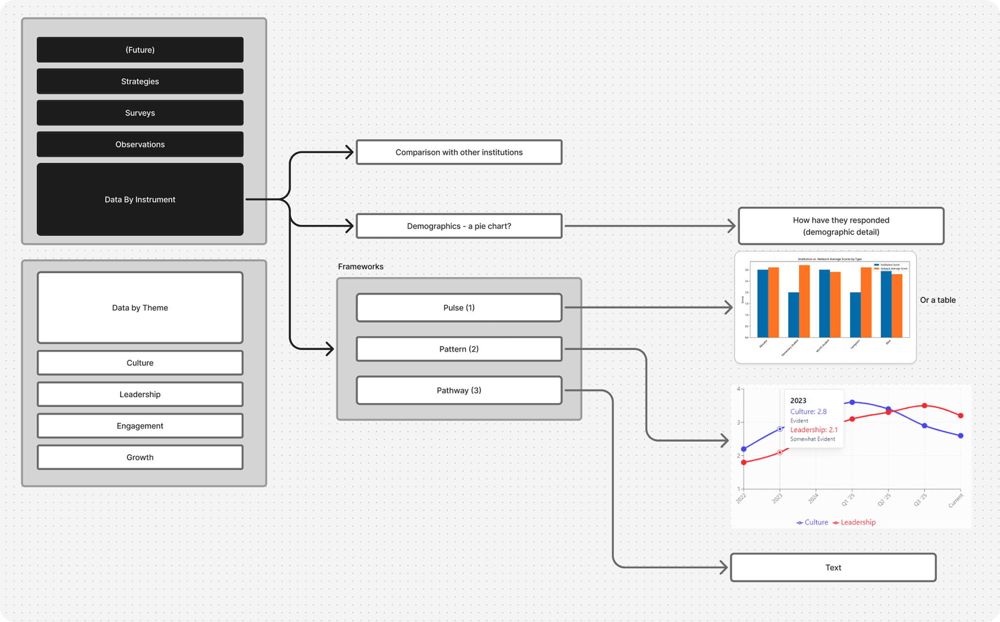
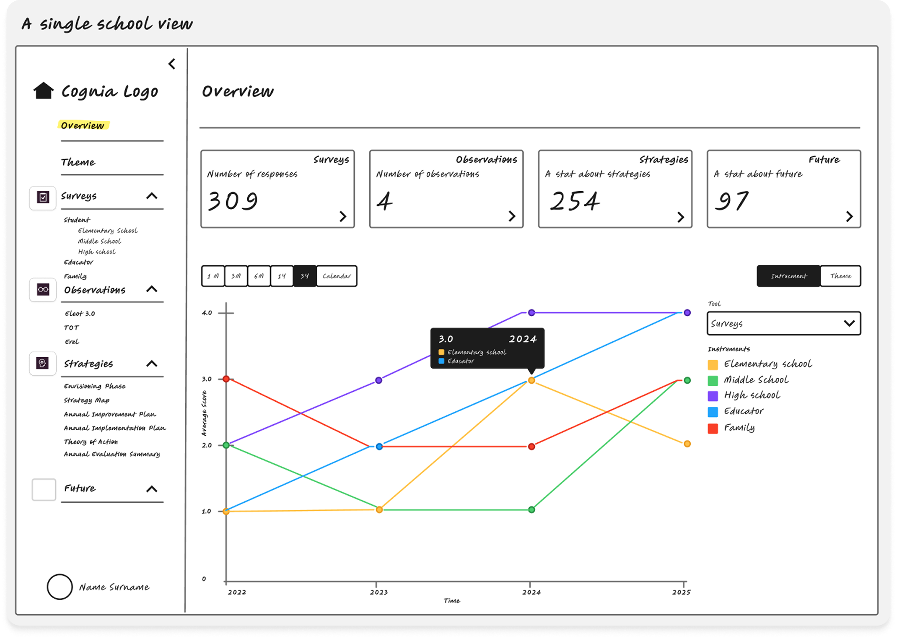
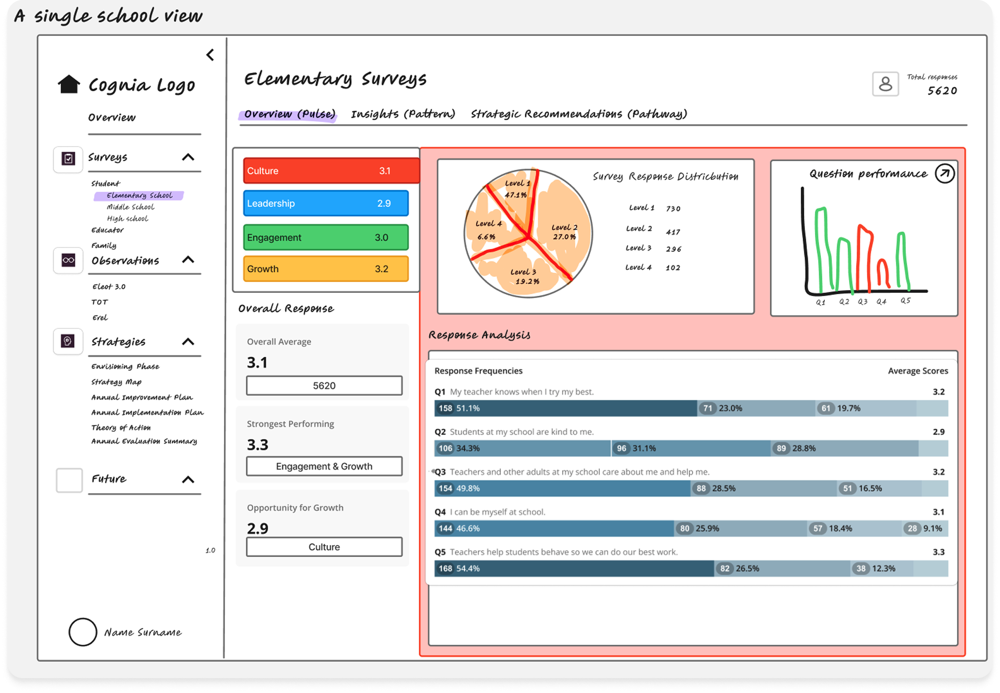
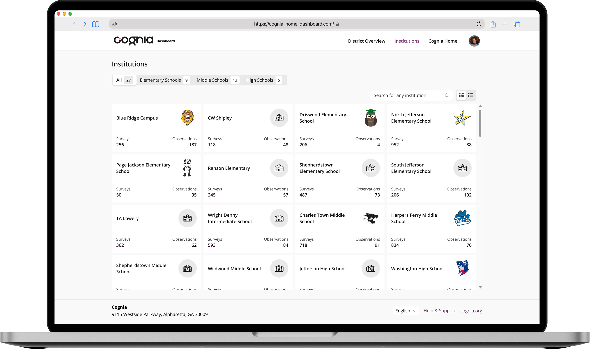
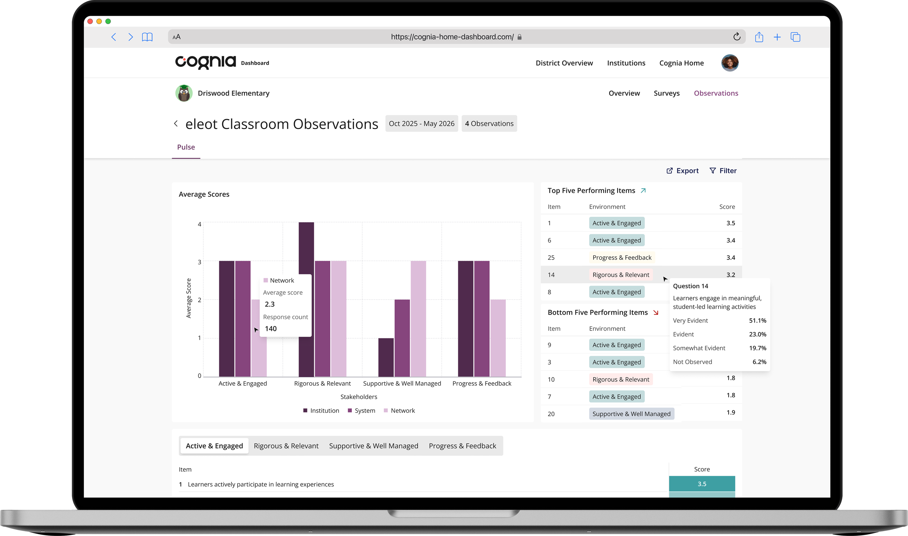

Analysing institution performance data to identify and understand key trends
Regular monitoring of institutional data is essential for district leaders, heads and external evaluators to gain accurate insights into performance. This feature provides real-time visual data through intuitive graphs and charts, allowing a quick understanding of one or multiple institutions, as well as a way to customise and filter views to analyse data based on specific needs.
My Impact
Leaders lack real-time visibility into their institution's performance data. Users cannot easily access aggregated survey and observation data within the platform, forcing reliance on external reports and preventing timely decision-making.
Analysing Dashboard Best Practices
I researched industry-standard dashboard patterns to understand how complex data sets are best visualised for quick comprehension and decision-making.

Organising Complex Data Hierarchies
The platform serves district leaders who oversee multiple institutions. I worked to establish clear data hierarchies that allow users to navigate from district-level overviews down to individual institution performance.

Ideating on Layouts and Visualisations
I explored multiple layout approaches and chart types to find the most intuitive way to present survey and observation data side-by-side.


Creating Interactive Visualisations
To effectively communicate with our client, I created interactive Figma prototypes showcasing a district overview of survey and observation data, a card view of institutions, and drill-down to institutional observation data.

